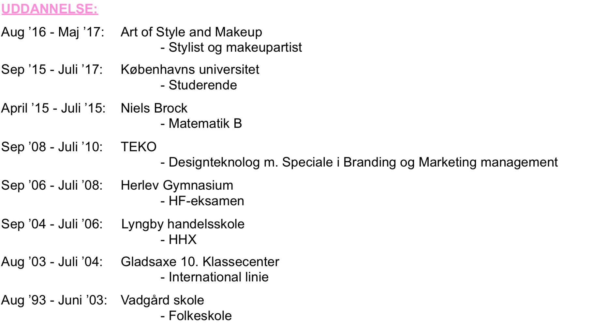

Mit CV
Mange ting kan siges om mig. For mig er det vigtigt, at de mennesker jeg har omkring mig uanset relation, at de er godt tilpas, og har en god oplevelse. Jeg gør en dyd af, at mit arbejde er æstetisk, det skal være præsentabelt ned i detaljen og være indbydende for modtageren. Jeg er ikke bange for at tage initiativ. Jeg kan godt lide at have mange bolde i luften. Jeg tager gerne egne beslutninger og initiativ, mens der arbejdes selvstændigt med en opgave, men jeg nyder også, at have kollegaer at sparre med. Hos mig er der en stor loyalitet over for min arbejdsplads. Jeg ser mig selv som værende pligtopfyldende og ansvarsfuld. Jeg er ikke bange for at tage ansvar for større projekter og jeg går gerne langt, for at opnå det bedste resultat. Jeg har en stor menneskeforståelse gennem mine mange års erfaring i servicebranchen, ved både at observere og servicere. Jeg er meget optaget af kundebehov, og hvordan dette kan opfyldes bedst muligt, sådan at de føler sig velkomne og gerne kommer igen. Som leder mener jeg, at det er vigtigt at alle kender deres arbejdsopgaver, og forstår disse. Spørgsmål kan altid opstå, og der synes jeg, det er vigtigt at man er kollegaer, og godt kan sparre med hinanden på tværs af stillinger. Som menneske er jeg smilende, selvstændig og pligtopfyldende.

Udfra mit skole og arbejdsliv, har jeg skabt stor kreativ erfaring, samt en hel masse kundekontakt. Jeg har altid være kreativ og har stået i butik i 15år med ansvar for at få butikken til at se indbydende ud for kunderne.
På dette studie, kan jeg mærke det er adobe programmer og den kreative proces der er mest indbydende for mig, hvorimod kodningen er lidt svære for mig, også at forstå, men jeg lytter og gør det så godt som jeg kan.